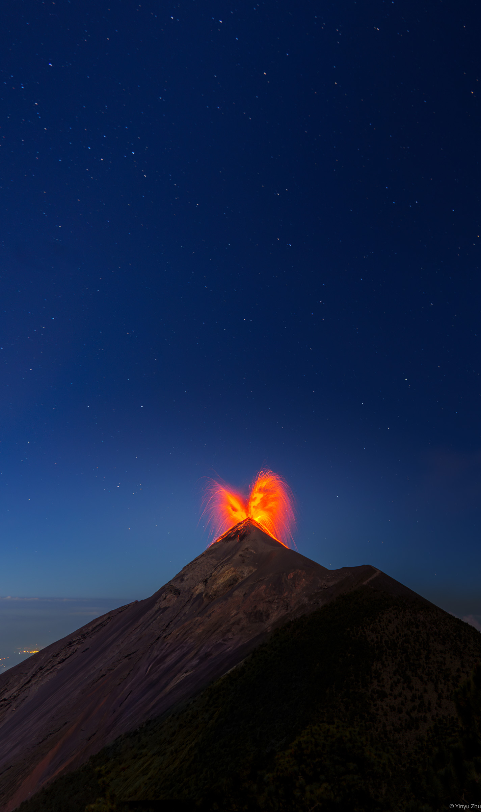
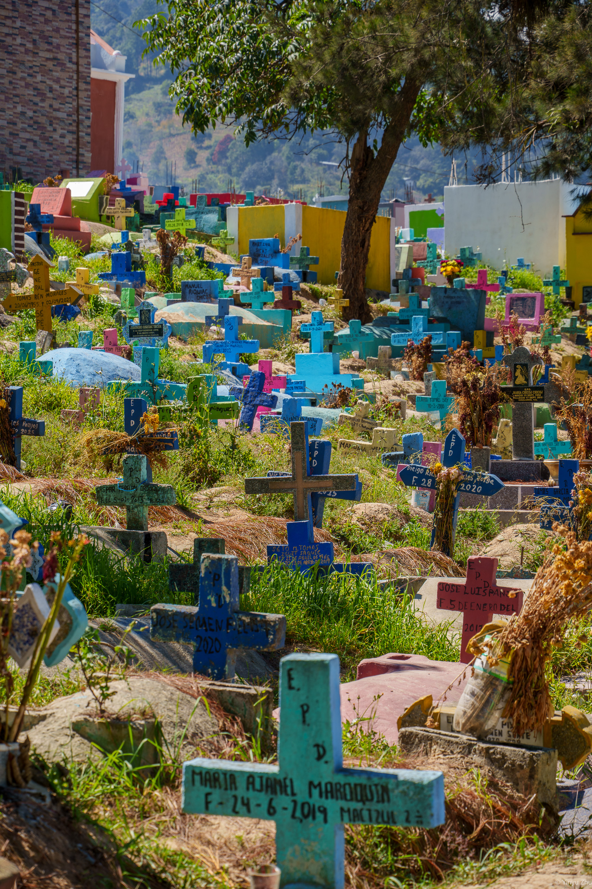
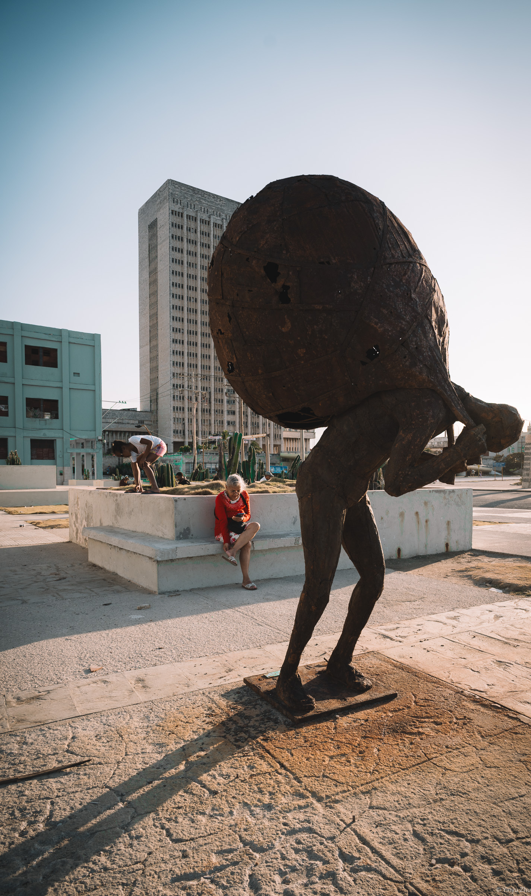
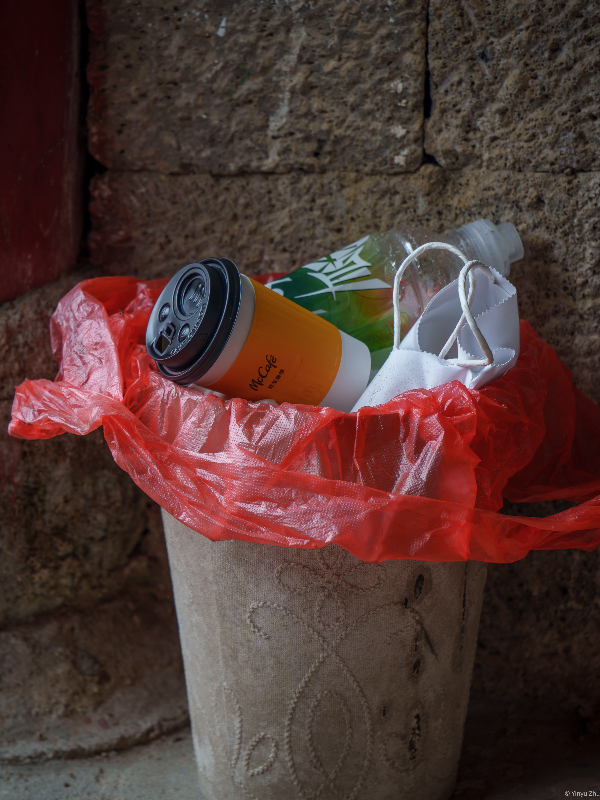
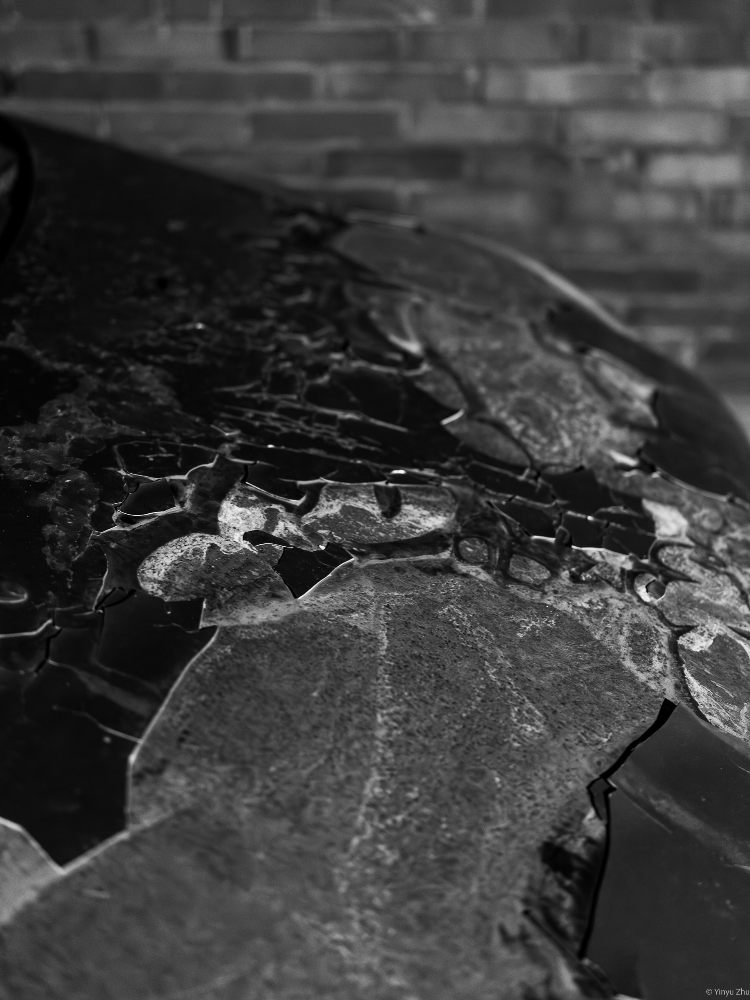

故事

夜色把山体压低，把天空打开。星光很安静，火山口却在远处持续喷发，红色的熔岩从黑暗中升起，又落回山的轮廓里。画面里没有多余的东西，只有天空、山和火。它不是一场壮观的表演，更像一次短暂的显露：大地在夜里露出自己的内部，安静，却无法忽视。

山坡上的墓地被阳光照亮，蓝色、粉色、绿色和黄色散落在草丛之间。这里没有把死亡藏进阴影里，而是让它站在明亮的空气中。每一个十字架都很小，每一个名字都很具体。颜色让记忆变得接近生活，也让这个地方少了一点距离感。人离开之后，留下的不只是石碑，还有被继续照看的形状、文字和土地。

城市广场上，一座巨大的雕塑弯着身体，占据了画面的前方。它沉重、锈蚀、安静，和背后的高楼一起构成了城市的尺度。旁边的人坐着、弯腰、低头看手机，生活照常进行。纪念性的物体和普通的一天被放在同一片光里。重量并没有打断日常，只是成为人们经过、停留、继续生活的一部分。

在一面粗粝的石墙前，几个被使用过的物件被随手放进垃圾桶里。纸杯、饮料瓶、白色纸袋，原本只是城市消费里最轻的东西，却因为红色塑料袋的包裹，突然拥有了一种临时的秩序。它们没有人物，也没有事件，却记录了一个动作刚刚结束的痕迹。有人停留过，喝完了，离开了。日常在这里不是背景，而是主角。

镜头贴近一片破裂的表面。颜色被拿走以后，裂痕、反光和灰尘变得更清楚。它不再只是一个损坏的物体，而是一块被时间打开的平面。边缘翘起，暗部下沉，光落在不规则的纹理上，让一张普通的桌面变成了可以被观看的地形。破损没有被修复，也没有被美化，只是安静地存在着。